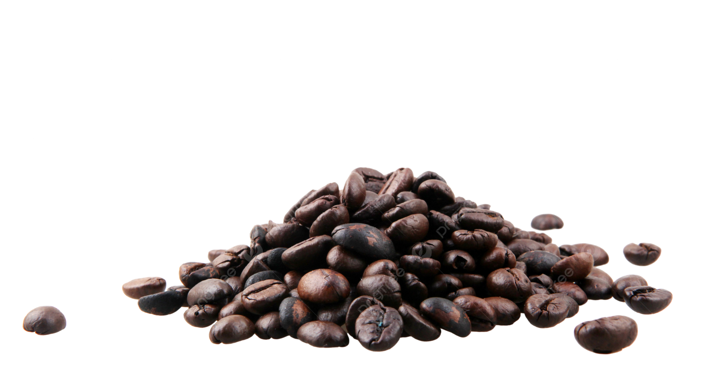

Experiencia Detalhada
| Empresa | Peridodo | Descrição | Ferramentas | |
|---|---|---|---|---|
| Monte Carlo | jan - 2023 / jun - 2023 |
Participei ativamente da equipe de desenvolvimento do site institucional, utilizando Ruby on Rails. Fui responsável pela correção de bugs (bug-fixing) e pelo desenvolvimento de novas features de menor complexidade, o que me permitiu aprofundar meu conhecimento no padrão MVC. Colaborei na criação de testes automatizados com RSpec para garantir a estabilidade das entregas e também atuei no desenvolvimento de componentes de front-end com HTML, CSS e JavaScript (ERB). |
|
|
| Café Orfeu | jun - 2023 / fev - 2024 |
Responsável pelo desenvolvimento e manutenção de novas funcionalidades para as plataformas web e mobile da empresa. Atuei no ciclo completo de desenvolvimento, desde o levantamento de requisitos até a implementação, utilizando Java e o ecossistema Spring. Fui um membro chave na projeção e implementação de APIs RESTful para integração com serviços de parceiros, além de trabalhar na otimização de consultas a bancos de dados (SQL). |
|
 |